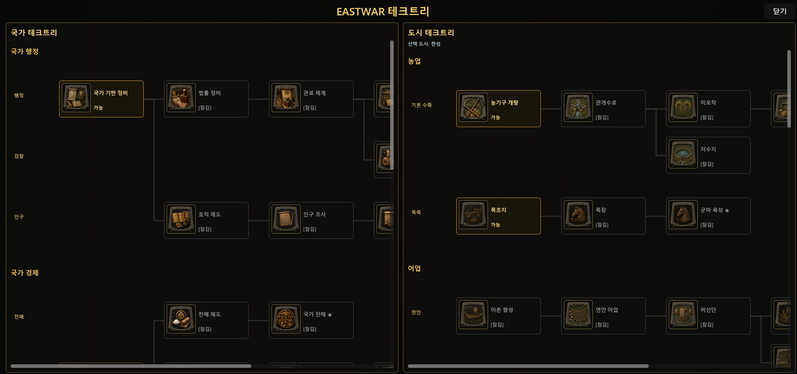
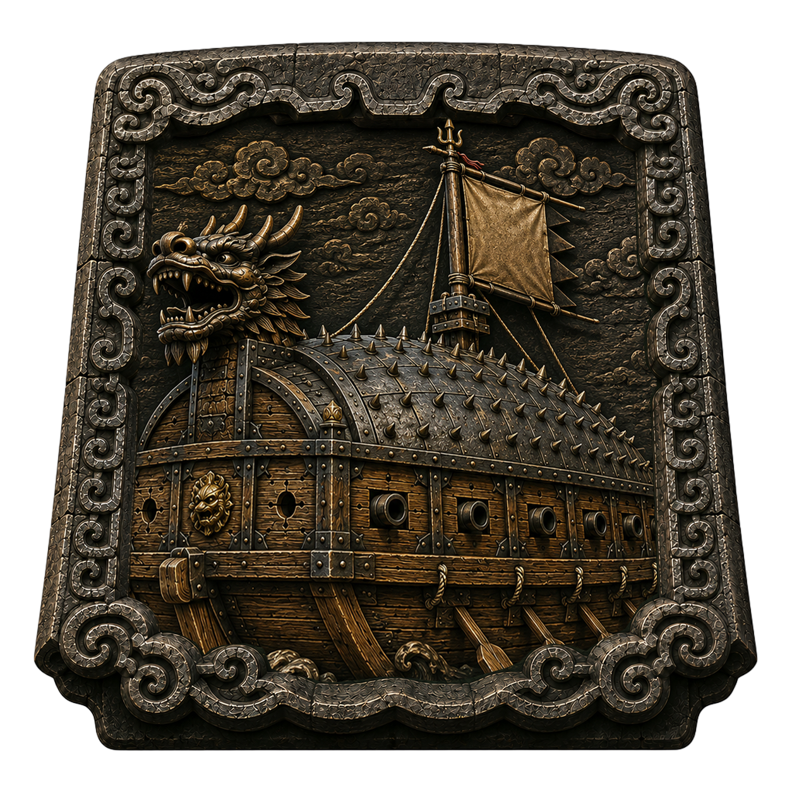
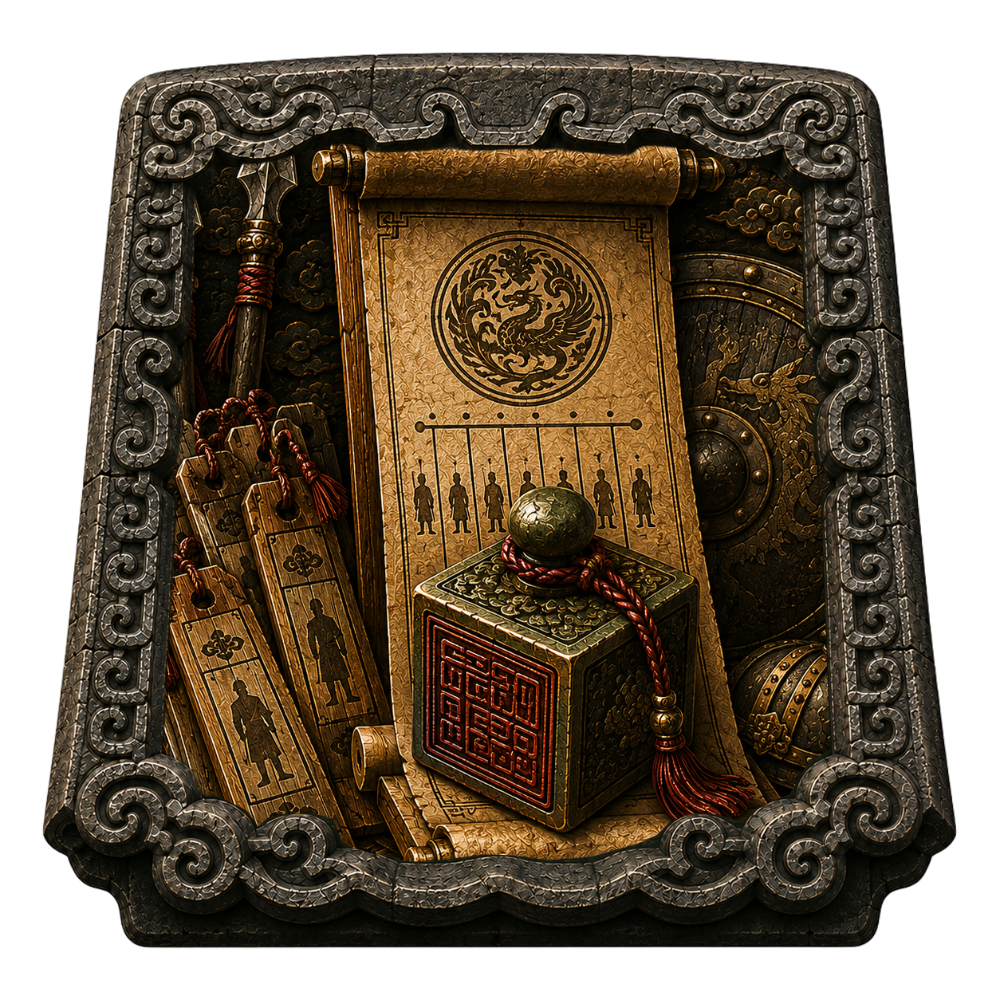
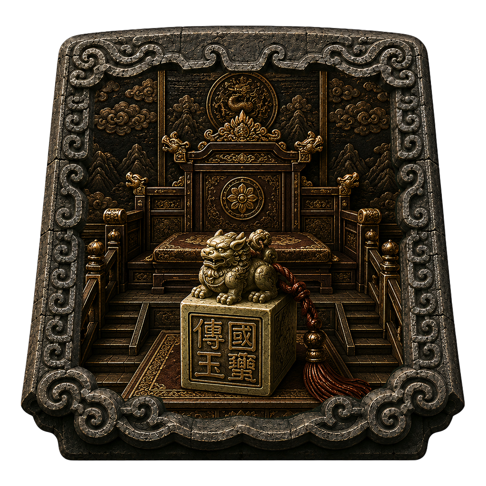
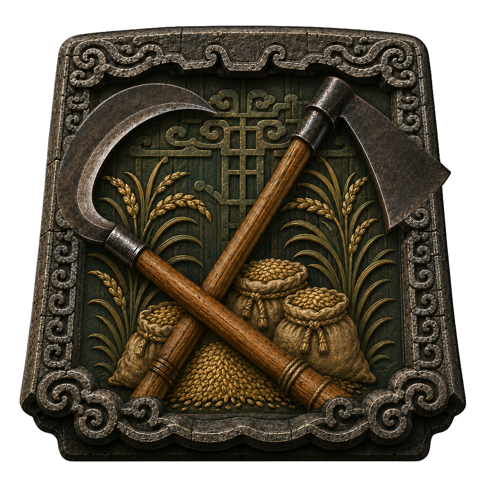
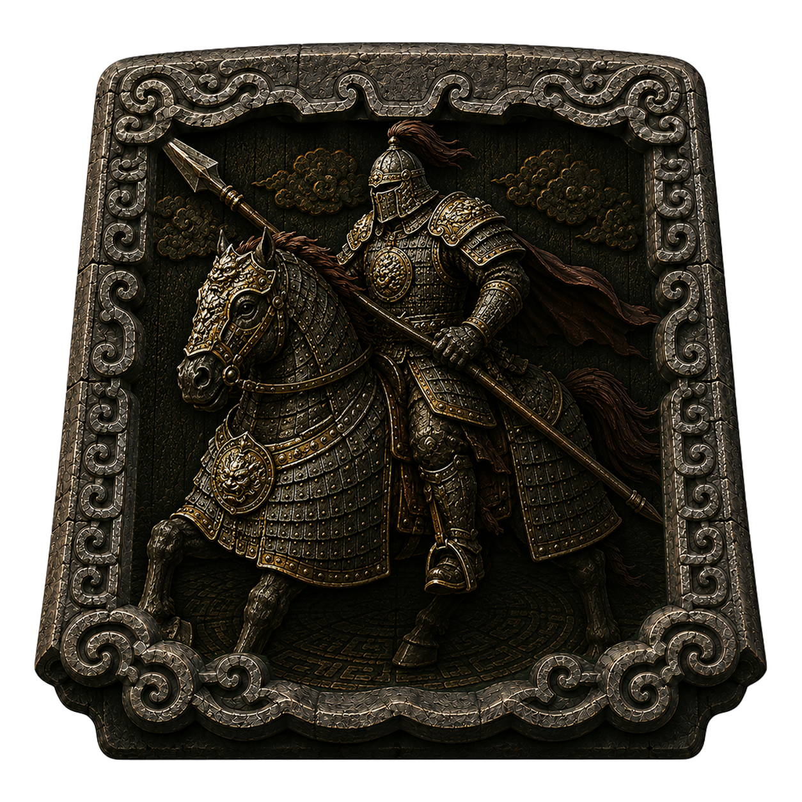
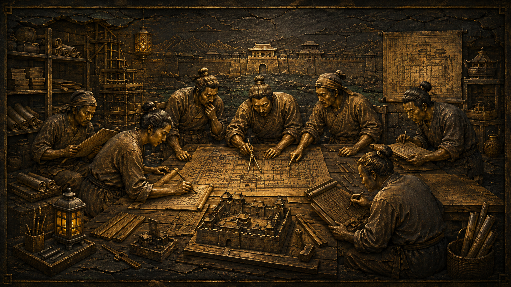

EASTWAR 개발일지 #023
연구가 진짜로 게임을 바꾸기까지 — 테크트리, 한 달의 기록
2026년 7월 8일적이 압박할 의도를 갖기 시작했으니, 이제 플레이어 쪽에도 대응할 성장축이 필요했다. 그게 테크트리였다. 그리고 이 작업은 예상보다 훨씬 길었다. 한 달 가까이 걸렸고, 버전 태그로는 40개 가까이 붙었다.
뼈대부터 앉히다
가장 먼저 한 일은 설계도 위에 있던 테크들을 데이터로 옮기는 작업이었다. 도시 테크는 농업, 어업, 상업, 군사(보병·궁병·기병·수군·방어·공성)로, 국가 테크는 행정, 경제, 군사, 외교로. 이 시점엔 아직 아무것도 눈에 보이지 않았다. 그냥 뼈대를 registry에 채워 넣은 것뿐이었다.
보이게, 그리고 클릭할 수 있게
다음은 이 뼈대를 화면에 띄우는 일이었다. 좌측은 국가 테크트리, 우측은 도시 테크트리. 월드맵의 기존 감각을 그대로 가져와서, 왼쪽은 내 나라 전체를, 오른쪽은 지금 선택한 도시를 보여주게 했다. 처음엔 보기 전용이었다. 노드를 클릭해도 아무 일도 일어나지 않았고, 완료·가능·잠김 상태만 색으로 구분됐다.






여기서부터 디테일 싸움이 시작됐다. 큰 카드형 그래프를 좀 더 촘촘한 형태로 바꾸고, 아이콘을 클릭했을 때 상세 정보창만 갱신되도록 만들었다. 별거 아닌 것 같지만, 처음엔 노드 하나를 클릭할 때마다 그래프 전체가 다시 그려지고 있었다. 클릭할 때마다 화면이 잠깐씩 버벅였다는 뜻이다. 이 부분을 손봐서 클릭 반응 속도를 확 끌어올렸고, 아이콘 크기도 56px에서 64px로 키웠다. 그러자 이번엔 노드끼리 겹치는 문제가 다시 튀어나왔다. 특히 도시 테크트리의 군사 카테고리 쪽에서. 이걸 카테고리 하나하나 손으로 미는 대신, 간격 계산 규칙 자체를 전역으로 손봐서 해결했다.
연구가 진짜로 움직이기 시작하다
UI가 어느 정도 자리를 잡은 뒤에야 진짜 알맹이로 들어갔다. 연구 시작 버튼을 눌렀을 때 실제로 뭔가 일어나게 만드는 일이었다. 처음엔 연구를 시작할 수 있게만 했다. 그다음엔 턴이 넘어갈 때마다 남은 턴이 줄어들게 했다. 그리고 마지막으로 완료 처리까지. 이 세 단계가 붙고 나서야 테크트리는 "연구 시작 → 턴 진행 → 완료"라는 최소한의 뼈대를 갖췄다.

다섯 개의 카테고리를 하나씩 연결하다
여기서부터는 신중하게 갔다. 한 번에 다 연결하지 않고, 카테고리를 하나씩 쪼개서 붙였다. 경제 효과(농업·어업·상업 완료 시 식량/금 보너스)부터 시작해서, 군사/방어 효과(병영·성벽·훈련 계열), 국가 정책 효과(세제·관료·중앙집권), 해군/공성 표시 효과(거북선·화포·공성병기), 마지막으로 외교/첩보 표시 효과까지. 매 단계마다 같은 질문을 반복했다. 이 보너스가 정확히 그 도시에만 적용되는가, 다른 도시나 적에게 새어나가지 않는가, 연구 중인 상태에서는 보너스가 없는가. 다섯 카테고리가 다 붙고 나니, 이게 진짜로 테크트리 1차 적용의 마감권이었다.
비용을 실제로 걷다
효과가 붙은 다음엔 비용 차례였다. 처음엔 표시만 했다. 예상 비용이 이렇다는 걸 보여주기만 하고, 실제로 자원이 빠져나가진 않았다. 그러다 연구를 시작하는 순간 딱 한 번 금과 군량을 차감하도록 만들었다. 매턴 깎이지도 않고, 완료됐다고 추가로 빠지지도 않는 구조였다. 노역과 정책이라는 자원도 설계는 해뒀지만, 이번엔 저장 구조까지만 잠그고 실제 구현은 다음으로 미뤘다. "누적형으로 모아서 큰 연구를 한 방에 쓴다"는 방향까지는 정해뒀지만, 이건 다음 확장 몫으로 남겨뒀다.
F6에서 직접 확인하다
숫자와 로직이 다 붙은 뒤엔 결국 사람이 직접 눌러봐야 했다. 게임 시작 초반 10턴은 침공이 아예 일어나지 않도록 유예기간을 뒀고, 그 상태에서 국가 연구와 도시 연구를 처음부터 끝까지 눌러보는 시나리오를 쭉 훑었다. 초반엔 연구 한두 개를 가볍게 찍는 맛이 있는지, 중반부터는 경제와 군사 중 뭘 먼저 할지 고민되는지, 후반부는 목표감이 있는지. 이런 체감은 코드로 검증할 수 없는 부분이라, 직접 플레이해서 PASS를 붙이는 방식으로 마무리했다.
Domestic Tech Complete Lock
이 모든 과정을 지나 7월 7일, 테크트리 1차 구현에 완료 선언을 붙였다. 지금까지의 결과를 정리하고, 앞으로 테크트리 작업이 계속 무한히 확장되지 않도록 선을 그었다. 다음 확장은 노역/정책 자원 같은 별도 작업으로 분리하기로.
완료 연출을 마지막으로 얹다
완료 선언 다음 날, 마지막으로 하나를 더 얹었다. 연구가 끝났을 때 그냥 조용히 완료 표시만 뜨는 게 아니라, 국가 연구와 도시 연구 각각 전용 영상이 먼저 재생된 뒤 완료 카드가 뜨는 연출이었다. 영상이 끝나기 전까지는 아이콘도 텍스트도 화면에 나오지 않는다. 영상이 끝나야 비로소 연구 아이콘과 이름, 그리고 "행정 효율 +5%"처럼 구체적인 효과가 카드로 나타난다. 처음엔 이 영상이 화면 전체를 덮을 정도로 너무 크게 나와서, 전투 결과 영상과 같은 크기·비율로 맞추는 수정도 뒤따랐다.
한 달 가까이 걸린 이 작업의 끝에서, 테크트리는 이제 그냥 "누를 수 있는 화면"이 아니라 실제로 도시의 수입을 바꾸고, 국가의 세금을 바꾸고, 해금 조건을 여는 시스템이 됐다.